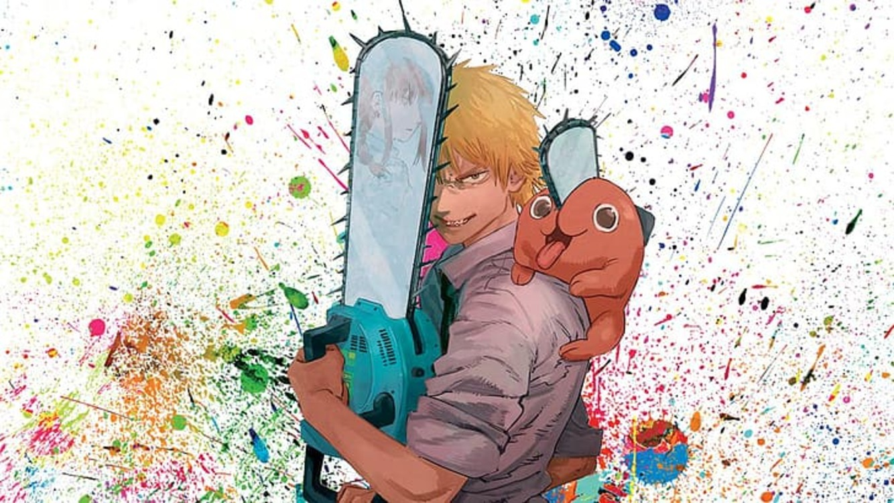

Denji

Denji is the main protagonist of the Chainsaw Man manga and anime series. As a young boy, he inherits his father's debts from the Yakuza. After meeting Pochita, he becomes a Devil Hunter for the Yakuza in an attempt to clear his debt. Once the Yakuza, under the control of a Devil, betrays him, he dies and Pochita becomes his heart. He now becomes the Chainsaw Man by pulling a cord on his chest. After meeting Makima, he became a Public Safety Devil Hunter. Denji shares the protagonist role with Asa Mitaka in the Academy Saga as the main male protagonist.